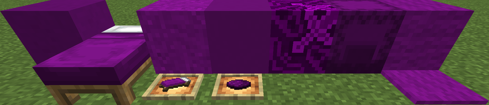

This Pack turns everything "Purple" into a specific tone (color code #6c1175).
It is compatible with the following Packs from Vanilla Tweaks:
Select this Resource Pack in a higher priority than Vanilla Tweaks to see the effects.
You can of course also use this Pack without Vanilla Tweaks.